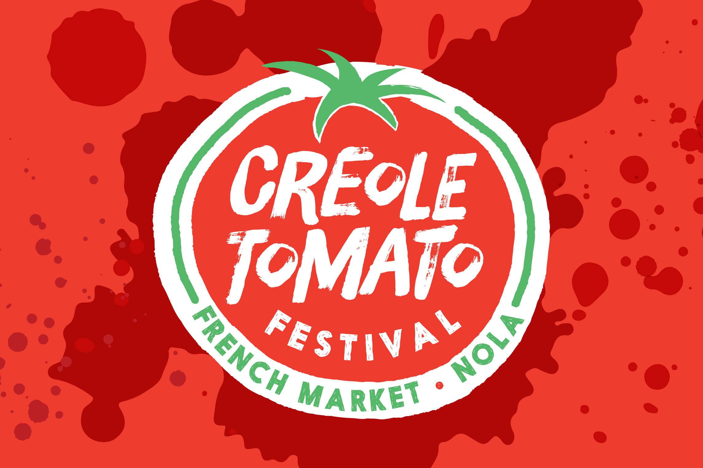
- Client
- French Market Corporation
- Agency
- Deep Fried Advertising
- Active
- 2014-present
- Role
- Lead Design
- Work
-
- Branding
- Print Design
- Digital Design
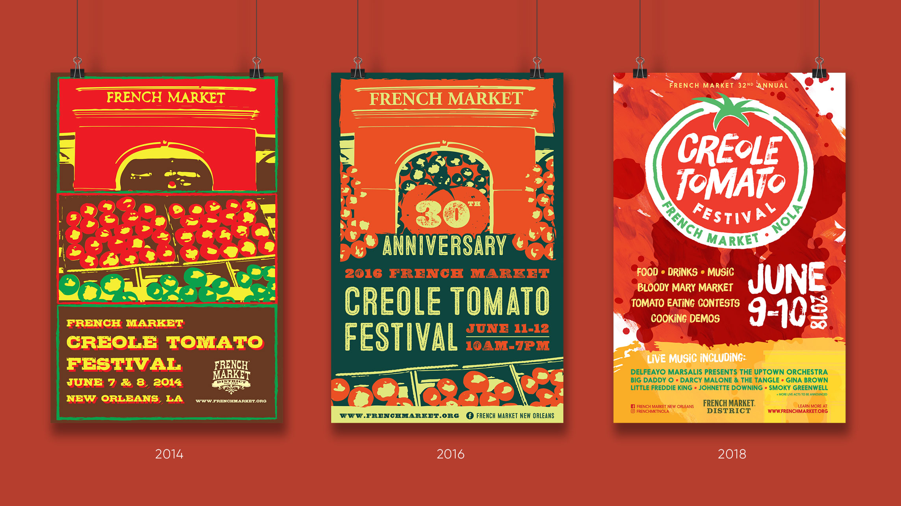
Since 2014, I've created materials for the festival as part of my extensive work with the French Market District. The branding for the fest evolved over the years, starting with a pop-art style from 2014-2017. Then in 2018, I completely revamped it into a bright-red and juicy brand.
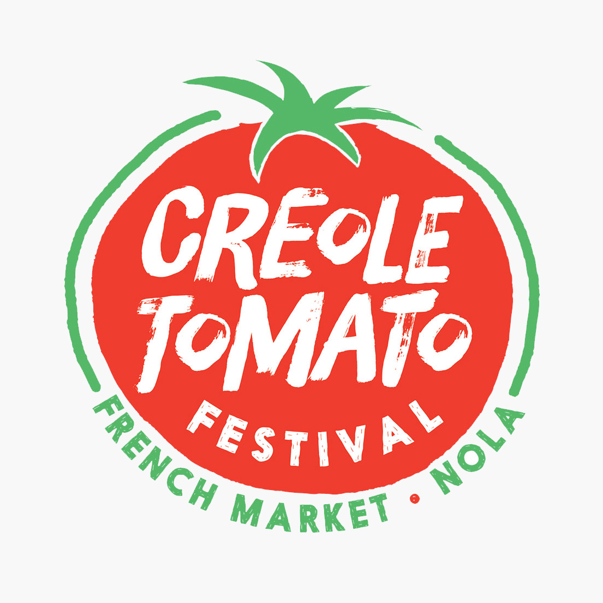
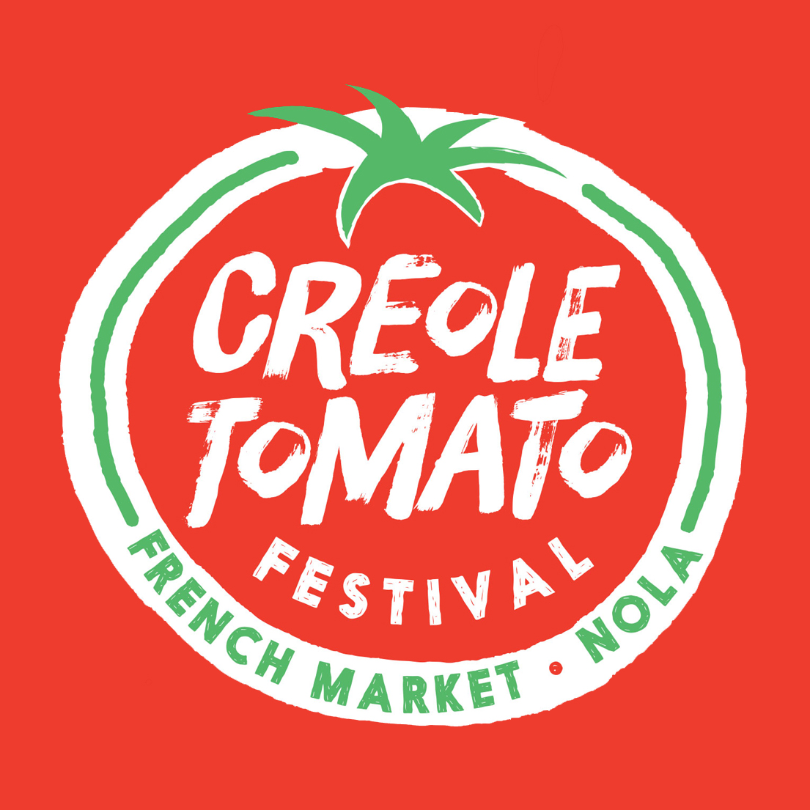
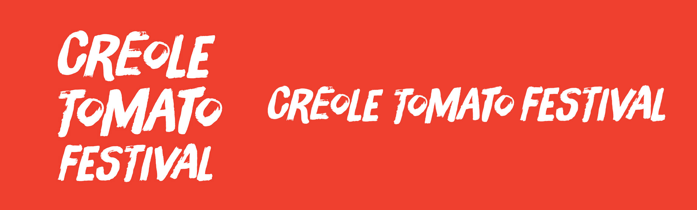
Materials designed for the festival include print advertisements, billboards, banners, stage scrims, cups, sunglasses, and t-shirts.
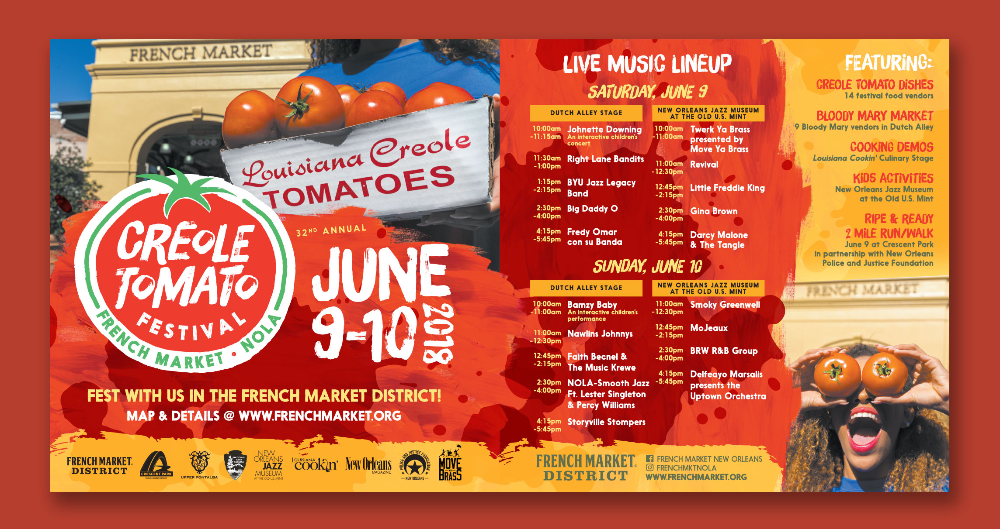
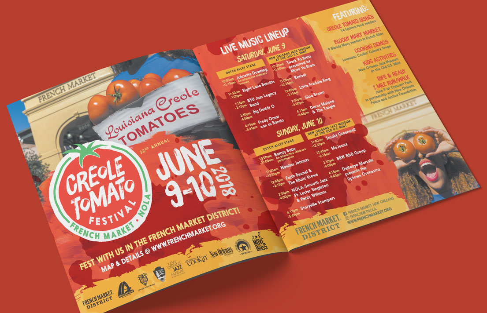
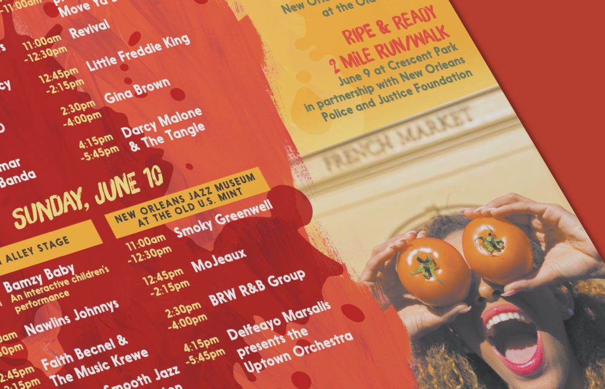
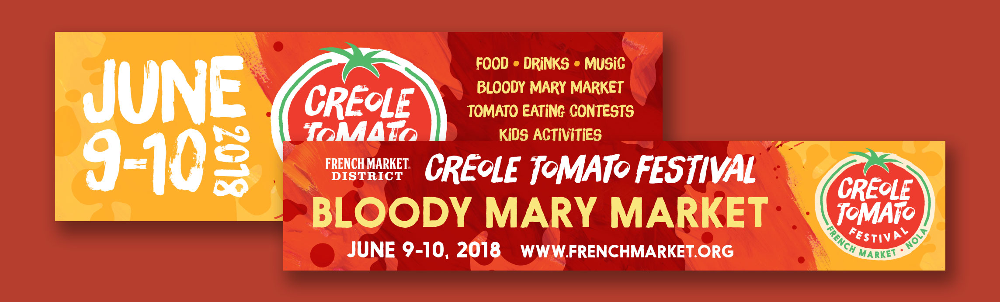
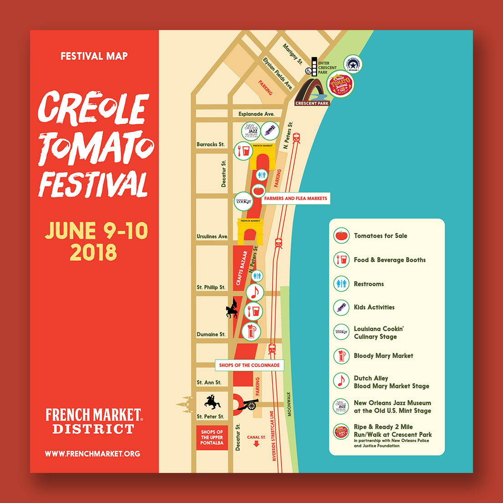
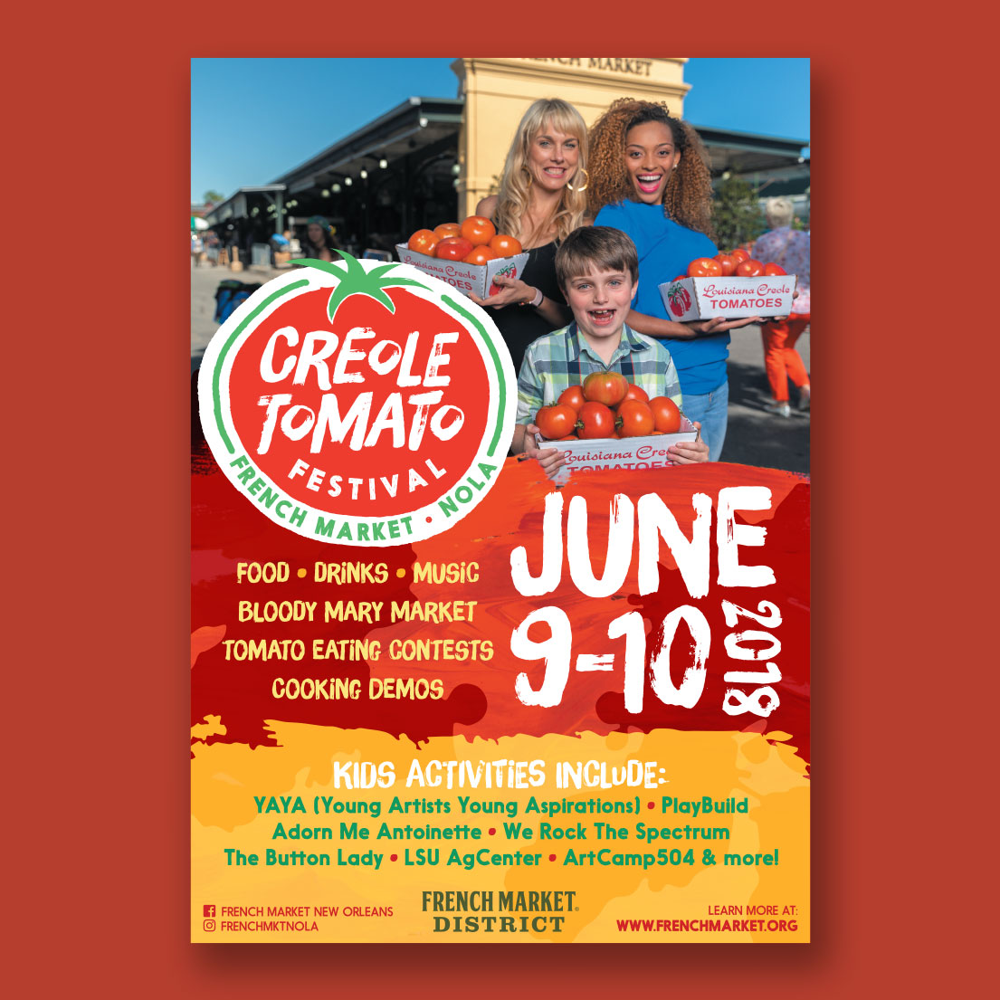
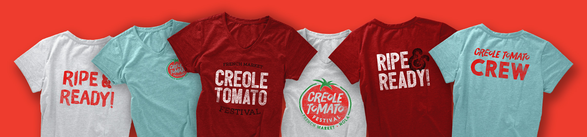
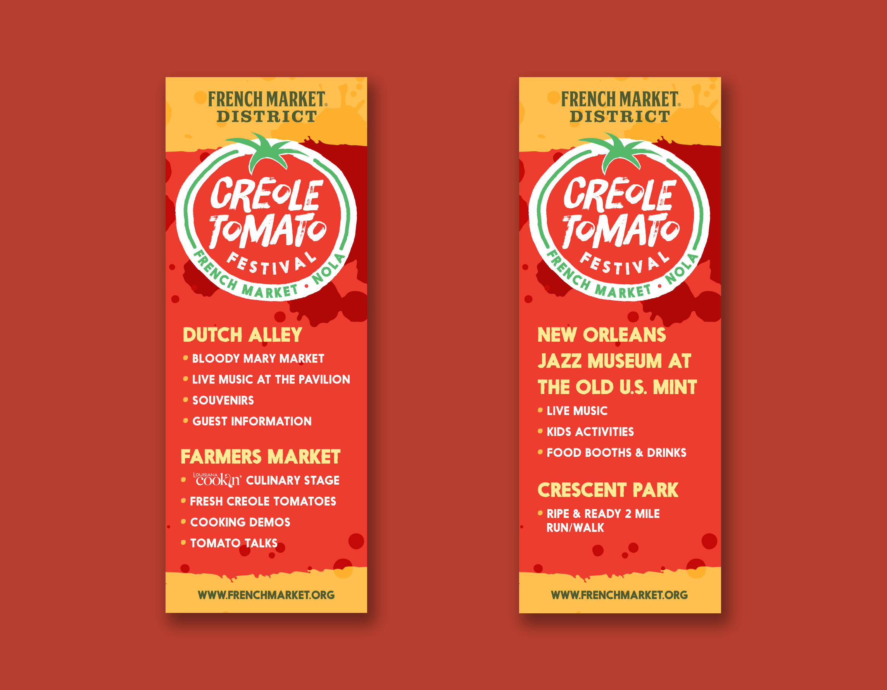
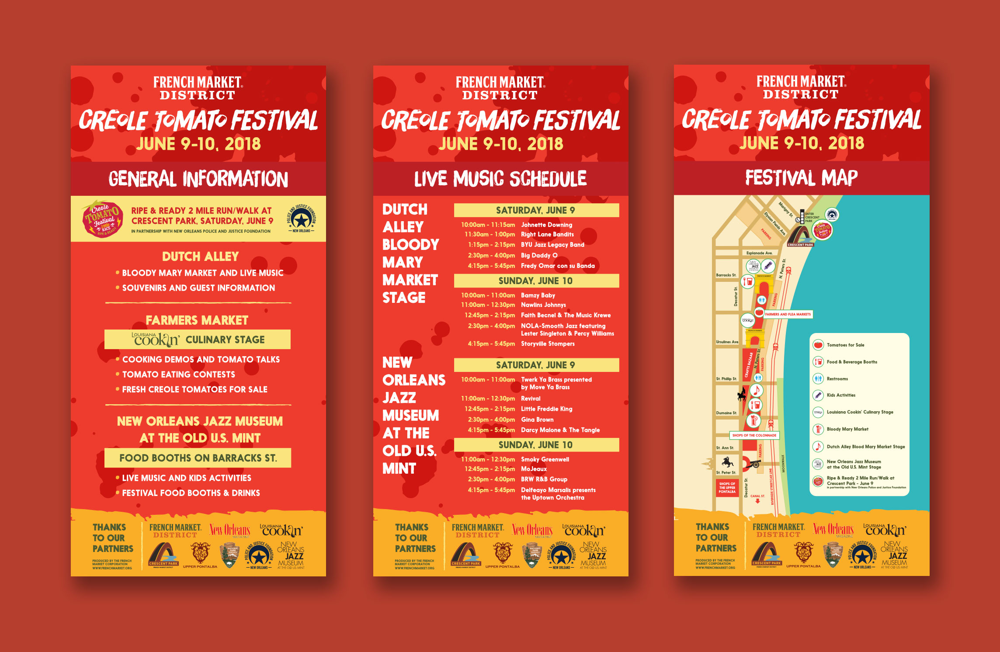